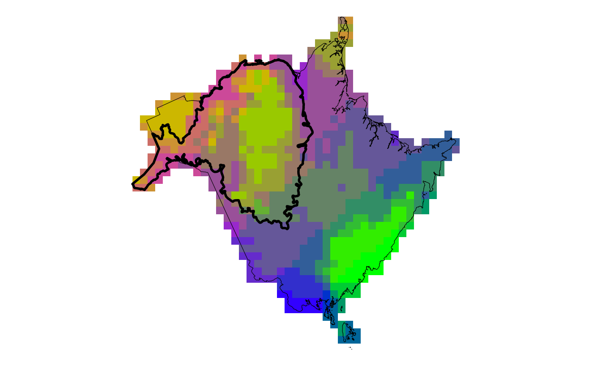

Create a map of exposure to climate change based on both change in temperature and change in climate moisture deficit.
Usage
plot_bivar_exp(
mat,
cmd,
scale_poly,
rng_poly = NULL,
leg_rel_size = 2.5,
palette = c(bottomleft = "green", bottomright = "blue", upperleft = "orange",
upperright = "magenta")
)Arguments
- mat
RasterLayer of classified mean annual temperature exposure.
- cmd
RasterLayer of classified climate moisture deficit exposure.
- scale_poly
sf polygon of the assessment area.
- rng_poly
sf polygon of the species range. Optional.
- leg_rel_size
numeric, shrinkage of the legend size relative to the plot. Default is 2.5 larger numbers will make the legend smaller
- palette
named vector of colours in each corner of the bivariate scale. Required names are bottomleft, bottomright, upperleft, and upperright.
Value
a list containing 2 ggplot objects "plot" containing the exposure map and "legend" containing the legend
Examples
# load the demo data
file_dir <- system.file("extdata", package = "ccviR")
# scenario names
scn_nms <- c("RCP 4.5", "RCP 8.5")
clim_vars <- get_clim_vars(file.path(file_dir, "clim_files/processed"),
scn_nms)
mat <- clim_vars$mat$RCP_4.5
cmd <- clim_vars$cmd$RCP_4.5
assess <- sf::st_read(file.path(file_dir, "assess_poly.shp"), agr = "constant",
quiet = TRUE)
rng <- sf::st_read(file.path(file_dir, "rng_poly.shp"), agr = "constant",
quiet = TRUE)
plot_bivar_exp(mat, cmd, assess, rng)
#> Preparing polygon 'assessment area polygon'
#> Preparing polygon 'assessment area polygon'
#> $plot

#>
#> $legend
 #>
#>